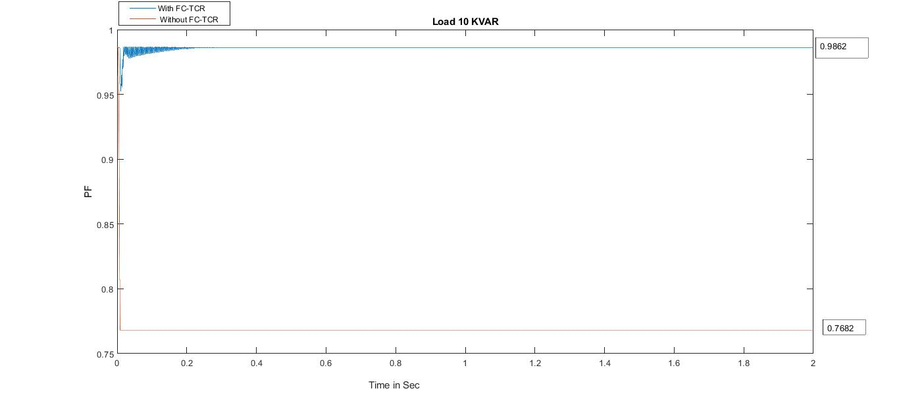
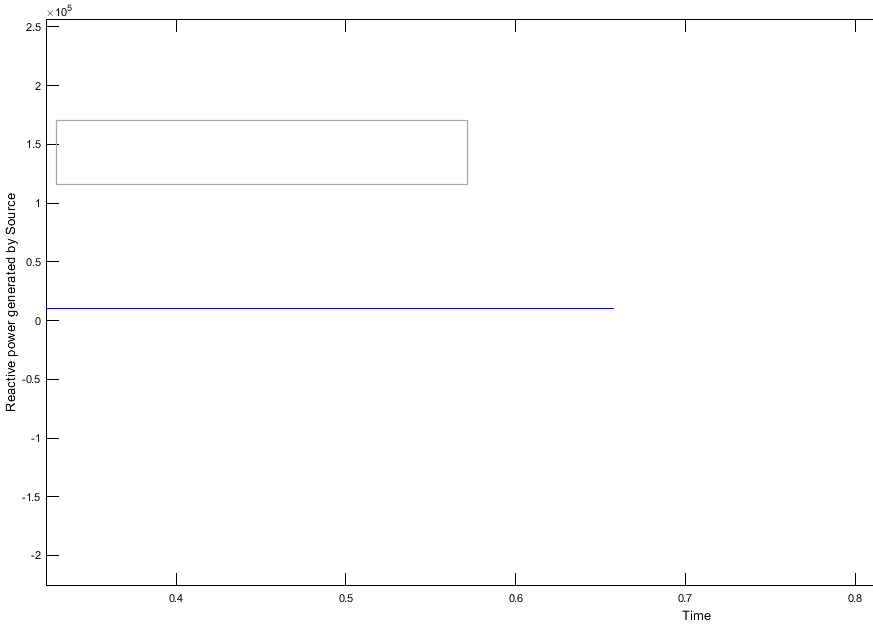

POWER FACTOR IMPROVEMENT USING FC-TCR
Supervisor
Er. Rajendra Dhahal
Er. Rajendra Dhahal
Project Members
Dhan Bahadur Khadka(072-BEL-208)
Surendra Tamang(072-BEL-240)
Vijaya Sharma(072-BEL-245)
Yogesh Karki(072-BEL-247)
August-9,2019
Dhan Bahadur Khadka(072-BEL-208)
Surendra Tamang(072-BEL-240)
Vijaya Sharma(072-BEL-245)
Yogesh Karki(072-BEL-247)
August-9,2019
INTRODUCTION
- Power factor improvement techniques using FACTS controller
- Reactive power Compensation technique is used i.e static var compensator
- SVC is used for load compensation of fast changing loads
- Among TCR and TSC,TCR elements is used as SVC
- FC-TCR method for power factor correction
- FC-TCR can be used for power factor correction, flicker reduction, steady-state voltage control, also filter out harmonics from the system
OBJECTIVE
- To improve the power factor to enhance the power quality of a line
- To optimize the operation of SVC at domestic level.
- To maintain the unity power factor of loads mainly inductive.
- To know basically operating principle of FC-TCR type SVC.
Methodology

Basic control diagram


- Measurement of initial reactive power consumed by load
- Comparison with reference reactive power
- Calculation of suitable firing angle with PI controller
- This signal is passed to firing pulse generator
- Firing pulse generator produce the necessary current pulse for the thyristor to turn on
- The reactor absorbs the reactive Power based on the varying fired thyristor angle





- Our project only deals with inductive loads
- Chances of misfiring of tcr which requires extra tsc circuits and control mechanism would be complex
can be used for controlling of reactive power for leading loads
- Variation of reactive power with firing angle was studied
- Reactive power consumed by inductive loads was compensated by FCTCR
- Power factor was improved continuously for dynamic loads Approximately to unity.
- Shobha R. Mane,Ashwini Kolekar “Arduino based power factor correction”International journal of electrical,electronics and data communication ISSN:2084 issued on 4 april 2016
- Dhurvang R. Gaikwad, C R Mehta “Automatic reactive power control using FC-TCR”Internation journal of advance computer research ISSN:22497277,volume-4,no-2,15june 2014
- Jitendra Kumar dash “Control statergy for reactive power using using FC-TCR by MATLAB simulink” I.J.EEE, volume-2, E-ISSN: 2310.Issed on 4 august 2015.
- G. Premkumar and B. Muthukumar “ Design, fabrication and implementation of microcontroller controlled SVC” Internation journal of computer application, (0975-8887) volume-81, 19 November 2013
- Sumit k rathod ,Chintan Patel “Simulation and implementation of FC-TCR.” International journal of innovation research in advanced engineering, ISSN no- 2349-2163 volume-1, issued date-4 may 2014.